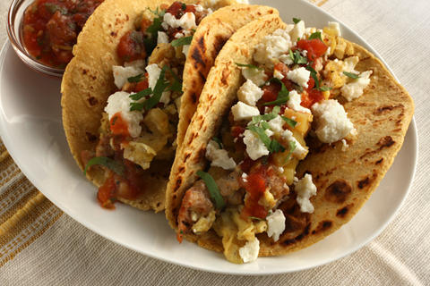
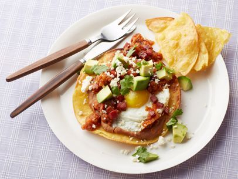

Main Dishes
The main dish is the centerpiece of your breakfast.
Mom, choose one main dish from this section to cook for breakfast. You can make breakfast tacos with chorizo, breakfast sandwiches with pancetta, or Huevos Ranceros with chorizo. There will be leftovers of each recipe.
Armabdo, choose one main dish from this section to cook for breakfast. You can make breakfast tacos, breakfast sandwiches with temph, or Huevos Rancheros with temph. There will be leftovers of each recipe.
- Breakfast Tacos
Breakfast tacos are a refreshing and nutritious breakfast food. They're also easy and quick to make!
 - Breakfast Sandwich with Pesto-Scrambled Eggs
This recipe describes how to make a delicious breakfast sandwich with pesto scrambled eggs. Breakfast sandwiches are easy and quick to make; they're also portable.
- Huevos Rancheros
Huevos Rancheros is a breakfast dish consisting of eggs served on corn tortillas with a tomato-chili sauce.
